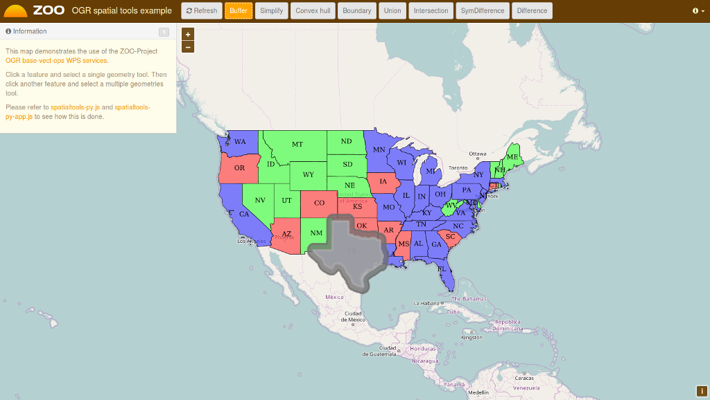
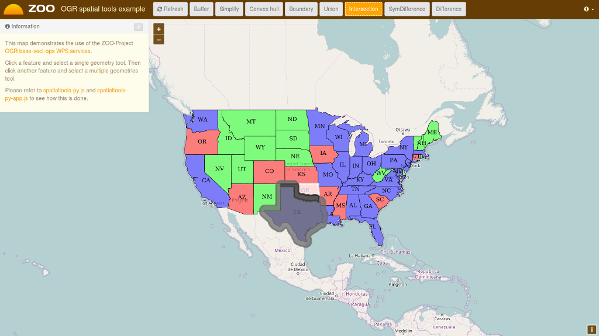
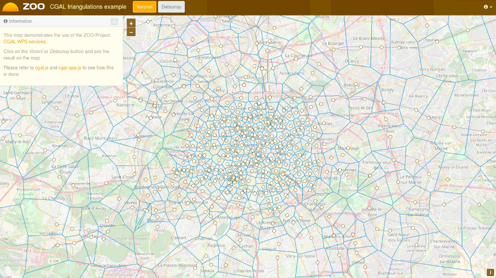
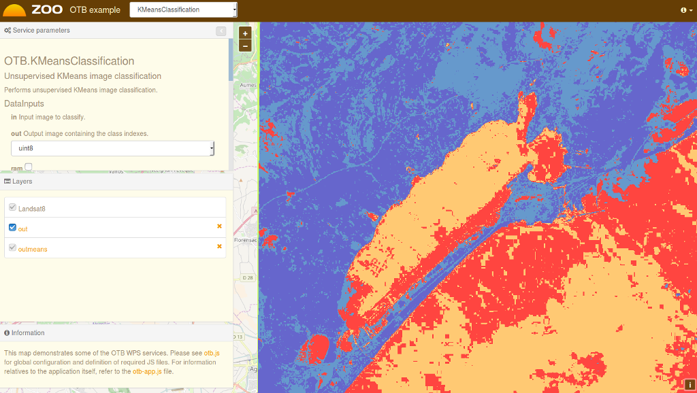

Zoo Projekt gyorstalpaló¶
A ZOO-Projekt egy fejllesztőbarát Web Processing Service (WPS) keretrendszert biztosít a webes feldolgozó szolgáltatások létrehozásához és összeláncolásához. Egy WPS webes hozzáférést biztosít függvényekhez, melyek térbeli algoritmusokat futtatnak.
Zoo-Projekt indítása¶
Válassza a Start menüből .
A Firefox megnyitja t a ZOO projekt demonstrációs kezdőoldalát. Itt kiválaszthat egy demon alkalmazást.

OGR térbeli eszközök demó¶
A ZOO projekt demonstráció kezdőoldalán kattintson a view-ra az OGR térbeli eszközök között.
Kattintson a térképre egy térképi elem kiválasztásához a GeoServer WFS szerverről, a térképi elem kékkel jelenik meg.,
Kattintson egy egyszerű geometriai feldolgozásra, például övezet, centrális vagy konvex burkoló és az eredmény sárgával jelenik meg.
Most válasszon egy másik térképi elemet az előzőleg kiválasztott közelében, majd kattintson a több geometriát feldolgozó gombra mint unió, szimmetrikus különbség vagy különbség, az eredmény pirossal jelenik meg a térképen.

{kind=link}
{kind=link}
CGAL háromszögek demó¶
A ZOO projekt demonstráció kezdőoldalán kattintson a view-ra a CGAL háromszögek között.
Nyomja meg a Voronoi vagy Delaunay gombot, hogy a térképén megjelenítse a WPS szolgáltatás eredményét, amint lentebb láthatja.

{kind=link}
OTB alkalmazások demó¶
A ZOO projekt demonstráció kezdőoldalán kattintson a view-ra az OTB alkalmazások között.
Töltse ki az űrlapot a bal oldalon a WPS szolgáltatás konfigurálásához.
Amikor kiválasztotta a feldolgozásához az értékeket nyomja meg az guilabel:Execute gombot az űrlapon alul.
Ha az image/png output formátumot választja, akkor a feldolgozás eredményét a térképen láthatja. Lent egy minta KMeansClassification eredményét, amikor image/png output formátumot választottunk.

{kind=link}
Mi a következő?¶
- Hozzáférhet a ZOO WPS képességeihez:
http://localhost/cgi-bin/zoo_loader.cgi?Request=GetCapabilities&Service=WPS
További kérdésekhez kapcsolódjon a ZOO projekt levelező listájához: zoo-discuss@lists.osgeo.org